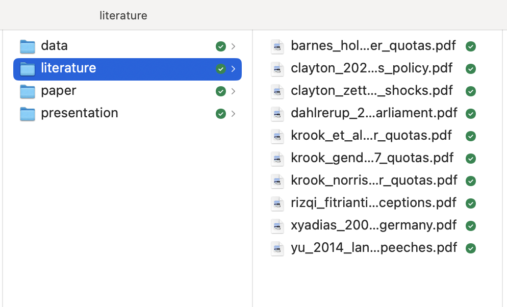

Sources, Topical, Chronological, General-to-Specific Lit. Reviews
What Is a Literature Review?
What Counts as Literature?
How to Do a Literature Review
Step 1: Finding Sources
Step 2: Reading Strategically
Step 3: Synthesizing and Organizing
Step 4: Identifying the Gap and Contribution
Step 5: Explaining Your Rationale
Literature Review - synthesis of the research previously done on a topic
The literature review is not just a summary of the previous literature. It is also a critical analysis of the literature
The literature review is also an iterative process: you can go back to it even after you write your conclusion and findings.
What counts as literature includes:
What does not count as scholarly literature
Note
search → read → synthesize → gap → write
For all the articles and chapters that you read, complete an excel spreadsheet with the following columns:
Remember to always cite ideas that are not your own, even when paraphrasing
Example
Research Question: Do women become more aggressive in political speech after gender quotas?
Start with:
- “gender quotas”
Then refine to:
- “gender quotas political speech”
- “political speech gender”
Your folder should look like this.

If you cannot find some pdf go to “bing.com” and type the name of the paper and the authors and add pdf
You may be able to find the article this way.
Now that you’ve found your sources, let’s talk about how to read them efficiently.
Read at least 3 key articles in full. For the others, skim strategically — focus on the abstract, introduction, and conclusion, as well as any sections directly relevant to your topic.
For each article, answer:
Article barnes_holmes_2020_gender_quotas.pdf
Central Question
Do gender quotas increase not only women’s numeric representation but also the overall personal and professional diversity of legislators?
Factors Highlighted in the Analysis
- Time since quota adoption
- Women’s share in legislature
- Party recruitment patterns
- Legislative turnover
- Disruption of gendered norms in candidate selection
Assumptions Behind the Argument
- Quotas can redefine what qualifies someone as a viable political candidate
- Political parties rely on insular, gendered networks
- Greater diversity benefits democratic representation and legitimacy
Methods and Evidence Used
- Quantitative analysis of 1,700+ legislators across 10 Argentinian provincial chambers over time
- Creation of diversity indexes using biographical data
- Qualitative evidence from elite interviews
Insights on Gender Quotas and Political Speech
An implication that increasing diversity through quotas may reshape legislative priorities and norms.
Other Relevant Citations
- Alexander, 2012
- Holman and Schneider, 2018
- Crowder-Meyer, 2013
- Clayton and Zetterberg, 2018
- Murray, 2014
- Franceschet and Piscopo, 2014
You can organize your literature review by topic
Best for: When the field has multiple competing or complementary strands.
Intro
“Scholars have long debated the causes of voter turnout. The literature can be divided into three main themes: institutional factors, socioeconomic variables, and psychological motivations.”
Body Paragraphs (by theme):
Studies such as Powell (1986) and Blais (2006) emphasize how electoral systems and compulsory voting laws shape turnout rates…
A second body of work focuses on individual-level characteristics such as education and income (Verba et al. 1995)…
Finally, researchers point to internal political efficacy and civic duty as predictors (Campbell et al. 1960)…
Intro
“Scholars have long debated the causes of voter turnout. The literature can be divided into three main themes: institutional factors, socioeconomic variables, and psychological motivations.”
Conclusion
While each theme contributes to our understanding of turnout, few studies integrate these perspectives, leaving open questions about how institutions and individual-level motivations interact.
You can also organize your literature review chronologically.
If you identify themes in time, you can organize your literature review with some chronology in mind
Best for: Showing how ideas, debates, or methods evolved over time.
Intro
“Theories of nationalism have evolved over time, moving from primordialist to constructivist perspectives.”
Body Paragraphs (by time period):
Primordialist views, such as those of Geertz (1963), saw nationalism rooted in ancient loyalties…
Anderson (1983), Gellner (1983), and Hobsbawm (1990) emphasized the role of industrialization…
More recent work highlights the performativity and discursive nature of nationalism (Brubaker 2004)…
Intro
“Theories of nationalism have evolved over time, moving from primordialist to constructivist perspectives.”
Conclusion
The field has increasingly shifted toward fluid, socially constructed accounts, though debate remains over the role of historical continuity.
You can organize the literature review by focusing on general things and then, more on the specific debates
This allows you to clearly show the gap in previous research.
Intro
“Why do some authoritarian regimes survive mass protests while others collapse? Existing literature provides partial answers but leaves important gaps.”
Body Paragraphs:
Scholars have studied democratization broadly (Przeworski et al. 2000)…
More recent work examines protest in authoritarian regimes (Chenoweth & Stephan 2011)…
Some argue elite cohesion is key (Slater 2010), others stress economic shocks (Acemoglu et al. 2013)…
Intro
“Why do some authoritarian regimes survive mass protests while others collapse? Existing literature provides partial answers but leaves important gaps.”
However, few studies examine the interaction between protest tactics and regime type.
Intro
“Why do some authoritarian regimes survive mass protests while others collapse? Existing literature provides partial answers but leaves important gaps.”
Conclusion
This study addresses that gap by analyzing how digital mobilization strategies vary by authoritarian institutional structure.
Many other types of literature reviews are possible including based on:
The additional elements that need to be included in the literature review are:
Note: Do not over-claim novelty.
A reminder: “No one has ever done X” is almost always false.
Your literature review should conclude by identifying:
You can frame the gap as something that has not been done and should complement existing work rather than aggressively criticize it. Keep in mind: the authors you’re critiquing might review your work.
Write 1-2 paragraphs on your gap
Answer these questions in your paragraph:
Explain how your project addresses the identified gap. Ask yourself:
Your contribution should be:
For practice, try this sentence: When my reader reads _____________, they’ll think differently about ____________.
Explain why you are doing this project:
Readers care because the work is:
To make your contribution clear, consider whether your project:
Select three articles you’ve already read for your project.
Carefully read each abstract and identify how the author presents their rationale and/or contribution.
Look for phrases like:
Write: For each article, jot down 2–3 sentences that explain:
Identifying the Problem
Author’s Contribution & Justification
Now turn to your own project.
Write 1–2 paragraphs that answer these questions:
Tip: You don’t need to state this in grand terms. Even curiosity about a puzzle or frustration with an incomplete explanation can be a valid rationale.
Popescu (JCU): Literature Review